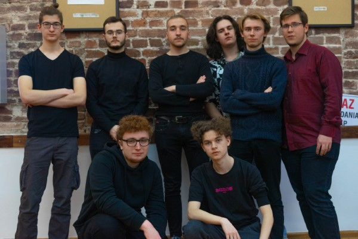

O Projekcie
W ramach projektu smallTalk planujemy zająć się problemem, jakim jest utrudnione nawiązywanie znajomości wynikające ze zmian społecznych związanych z pandemią oraz rozwojem internetu. Chcemy rozwiązać ten problem tworząc aplikację. Będzie ona eliminować przyczyny niechęci do prób nawiązania znajomości: stres związany z niepewnością, strach przed odrzuceniem lub brakiem wspólnych zainteresowań. Aplikacja pozwala na anonimowe, a co za tym idzie bezstresowe nawiązywanie kontaktu przez osoby, które tak naprawdę już się znają. Chodzą do jednej szkoły, pracują w jednym budynku, lub wybrali się na ten sam event. Następnie osoby są łączone i mogą porozmawiać ze sobą. Wiedzą, że mają coś wspólnego z rozmówcą, ale nie znają jego tożsamości. Przez to mogą być w 100% sobą. Jeżeli się nie uda - nic straconego. Natomiast jeżeli rozmowa przebiegnie pomyślnie, mają możliwość bezpiecznego ujawnienia się za obustronną zgodą - a potem pozostaje tylko kontynuowanie tej znajomości w prawdziwym życiu!
O Nas
Jesteśmy zespołem złożonym z paczki młodych i ambitnych uczniów szkół średnich. Pomysł na start w olimpiadzie “Zwolnieni z Teorii” zrodził się właśnie z tego, że szkoła nie oferowała nam wystarczająco; postanowiliśmy spróbować czegoś “poważnego”.
Podczas początkowych prac nad projektem udało nam się wpaść na dość ciekawy pomysł i uważamy, że smallTalk może naprawdę zmienić coś w zakresie nawiązywania relacji przez dzisiejszą młodzież. Problem społeczny jest realny, a nasza koncepcja powstała w wyniku rozpatrzenia wszystkich czynników, które właśnie nam utrudniają zawieranie znajomości.
NASZ ZESPÓŁ